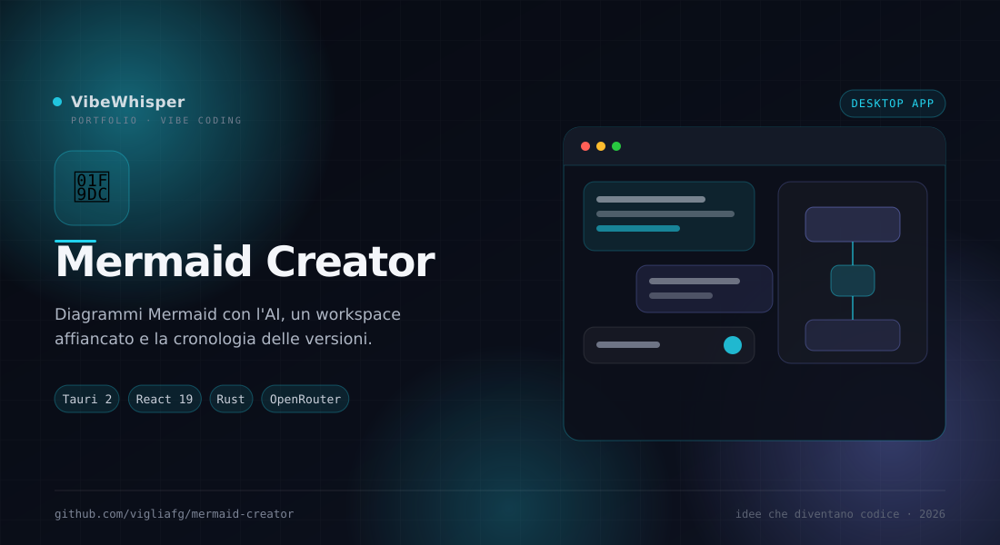

Mermaid Creator
Desktop app per creare diagrammi Mermaid con l'AI, organizzarli in un workspace affiancato alla chat e conservarne le versioni. Chat, editor e libreria in un'unica finestra, con i dati salvati in locale.
📖 Cos'è
Mermaid Creator è un'app desktop che unisce una chat AI con streaming e un editor visuale per diagrammi Mermaid. Descrivi il diagramma che ti serve, l'AI lo genera, l'app estrae automaticamente il blocco Mermaid dalla risposta e lo apre nel workspace affiancato: da lì puoi cambiarne tema, forma, etichette e struttura, confrontare le versioni e salvarlo nella libreria. È costruita con Tauri 2 (backend Rust) e React 19, e tiene conversazioni, diagrammi, versioni e allegati in un database SQLite locale.
👤 A chi serve
È pensata per sviluppatori, architetti software, docenti, studenti e product manager che disegnano flussi, architetture, schemi ER o timeline e vogliono partire da un prompt invece che da un canvas vuoto. Fa per te se ti serve un diagramma editabile — non un'immagine generata — e se vuoi conservare la cronologia delle versioni senza caricare nulla su un servizio cloud.
⚙️ Come funziona
La chat chiama OpenRouter in streaming e salva la conversazione in SQLite. Quando la risposta contiene un blocco mermaid, l'app lo estrae e lo renderizza con Pele, con fallback su Mermaid.js; il sorgente resta modificabile e l'anteprima si aggiorna in tempo reale. Il workspace supporta selezione, pan, zoom alla rotella, fit, 13 temi e preset, stile per elemento e modifica di label e struttura dei flowchart. Ogni salvataggio crea una versione ripristinabile nella libreria locale. La API key di OpenRouter è validata e conservata nel keyring di sistema.
🎯 Perché Mermaid Creator
Perché passare da un prompt a un diagramma modificabile dovrebbe essere un unico gesto. Mermaid Creator tiene insieme il momento creativo (la chat), il momento di rifinitura (il workspace) e la memoria del lavoro (versioni e libreria), senza obbligarti a copiare e incollare codice tra tre applicazioni diverse.
✨ Caratteristiche Principali
- Chat con streaming — Conversazione con il modello via OpenRouter, con estrazione automatica dei blocchi Mermaid dalle risposte
- Catalogo modelli — Ricerca nel catalogo OpenRouter, filtri vision/gratis e preferiti salvati in locale
- Allegati — Testo, PDF testuali, DOCX, immagini, clipboard e drag&drop direttamente nella chat
- Workspace espandibile — Editor a tutta finestra, con selezione, pan, zoom alla rotella, fit e fascia controlli richiudibile
- 13 temi e preset — Neon, Blueprint, Terminal, Mono e altri, con comandi AI per preset e palette
- Editing visuale — Stile per elemento, modifica di label e struttura flowchart, punte delle connessioni e direzione del layout
- Versioni e ripristino — Ogni salvataggio conserva una versione del diagramma, ripristinabile dalla cronologia
- Libreria — Ricerca, preferiti ed export in SVG, PNG e sorgente .mmd
- Privacy by design — API key nel keyring di sistema, dati in SQLite locale, nessuna telemetria
🏗️ Come Funziona
- Apri l'app e scegli un modello dal catalogo OpenRouter (la chiave viene salvata nel keyring di sistema)
- Descrivi il diagramma nella chat; puoi allegare un PDF, un DOCX o un'immagine come contesto
- L'app estrae il blocco Mermaid dalla risposta e lo apre nel workspace affiancato
- Rifinisci tema, struttura, etichette e direzione del layout con l'anteprima live
- Salva: il diagramma entra nella libreria e la versione precedente resta ripristinabile
- Esporta in SVG, PNG o .mmd per condividerlo o versionarlo nel tuo repository
📦 Installazione
# Requisiti: Node.js 24+, Rust stable, WebKitGTK 4.1 (Linux) git clone https://github.com/vigliafg/mermaid-creator.git cd mermaid-creator # Avvio con lo script dedicato ./scripts/run.sh # Oppure manualmente source scripts/env.sh npm install npm run tauri:dev
💡 Casi d'Uso
- Architetture software — Flowchart, diagrammi di classi, stati ed ER partendo da una descrizione
- Processi e flussi — Mappare un workflow aziendale o una pipeline e rifinirlo a mano
- Didattica — Spiegare un concetto con un diagramma pulito, esportabile in SVG
- Documentazione — Tenere versioni diverse dello stesso schema e ripristinare quella giusta